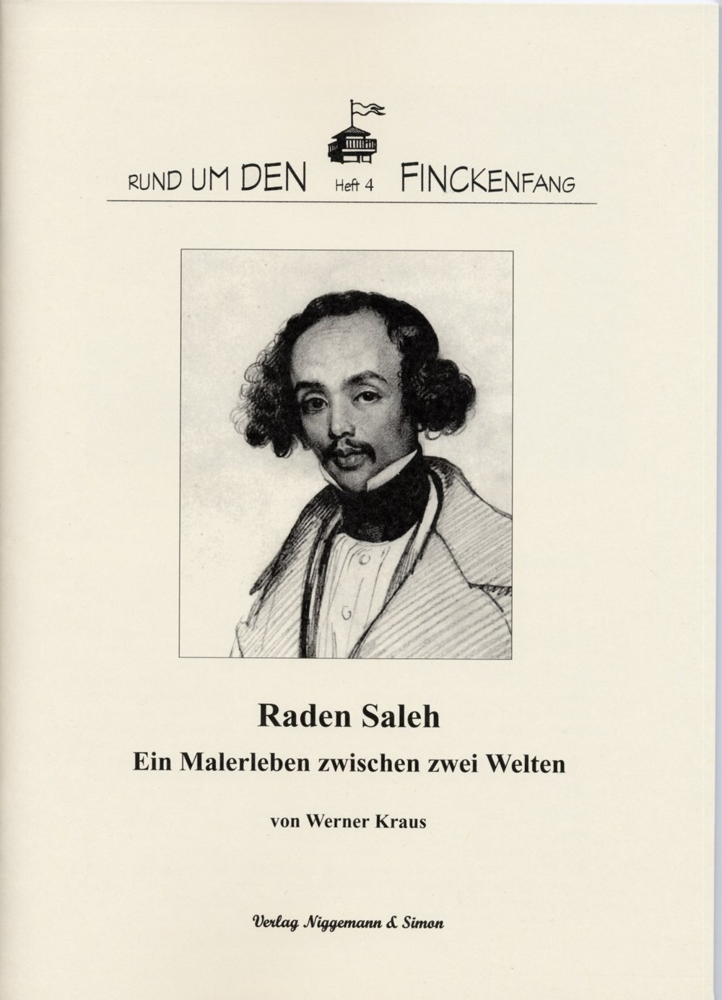

Rund um den Finckenfang · Heft 4
Raden Saleh – Ein Malerleben zwischen zwei Welten
Werner Kraus
1. Auflage · Maxen 2004 · 28 Seiten · 32 Abbildungen und 4 Farbseiten
ISBN 3-9808477-3-X
7,50 €
Zurzeit nicht lieferbar
Zum Inhalt
Zwischen 1839 und 1849 weilte der „javanische Prinz“ Raden Saleh bei der Familie Serre in Dresden und auf ihrem Rittergut in Maxen. In Deutschland ist sein Name nahezu vergessen und nur noch wenige Spuren wie etwa das sogenannte Blaue Häusel in Maxen erinnern an seinen Aufenthalt. In seiner Heimat gilt Raden Saleh dagegen als Begründer der modernen indonesischen Malerei. Jedes Kind kennt seinen Namen und seine Werke erzielen heute auf den internationalen Kunstmärkten Höchstpreise. Wer war dieser „Exot“, der durch sein Wirken eine Brücke des Austauschs und der Freundschaft zwischen Menschen unterschiedlicher Kulturen, Sprachen und Religionen schuf, eine Brücke zwischen Asien und Europa? Eine Antwort auf diese Frage liefert im vorliegenden Heft der Südostasienwissenschaftler Dr. Werner Kraus, der sich seit vielen Jahren mit der Lebensgeschichte von Raden Saleh beschäftigt.